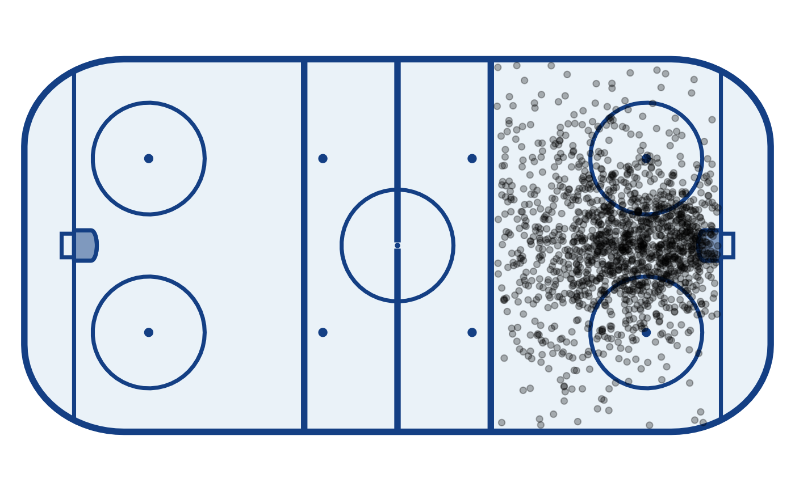
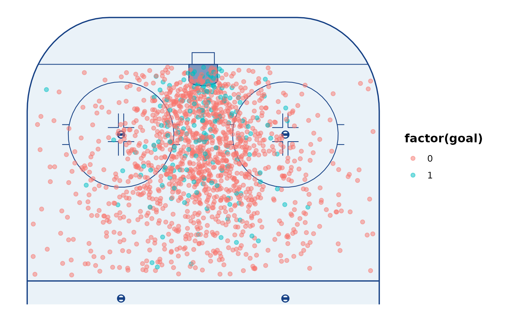
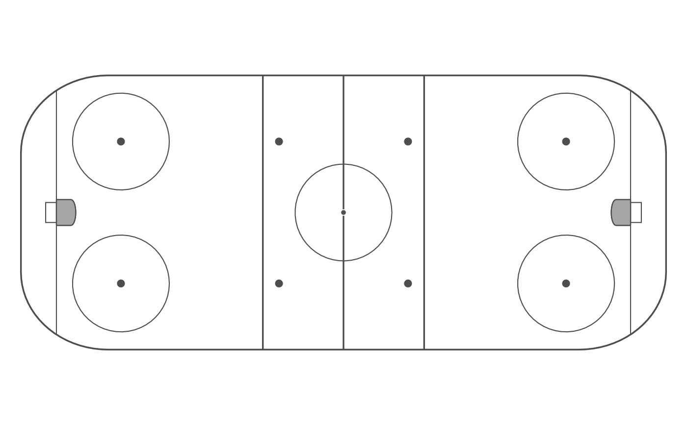

Draws the rink markings and sets up the plot canvas in one call: the rink layers, a
coordinate system for the chosen orientation and, unless theme = FALSE,
theme_rink(). Add it right after ggplot(), before your geoms, and map your data
in regular horizontal rink coordinates (x along the length, y across the width,
in the frame of dimensions). For orientation = "vertical" the display is rotated
for you, so the same data works in either orientation.
Usage
annotate_rink(
colour = "#143F84",
fill = "#eaf2f8",
dimensions = IIHF,
orientation = c("horizontal", "vertical"),
zones = c("dz", "nz", "oz"),
xlim = NULL,
ylim = NULL,
margin = 0.5,
zone_margin = 2,
linewidth = 0.3,
details = FALSE,
slot = FALSE,
slot_colour = "grey",
slot_fill = NA,
slot_alpha = 0.7,
slot_linewidth = 0.4,
logos = NULL,
logo_alpha = 0.25,
theme = TRUE
)Arguments
- colour
Colour of the rink markings.
- fill
Colour of the ice.
- dimensions
Rink dimensions to draw, e.g. IIHF (default) or NHL; see rink_dims and
rink_dimensions().- orientation
"horizontal"(default) or"vertical"(the right-hand end, the offensive zone, at the top).- zones
Which zones to show, a subset of
c("dz", "nz", "oz")(default all three);"oz"is the high-xend. Setsxlimfor you, e.g.c("dz", "nz")crops to the defensive and neutral zones. Ignored ifxlimis given.- xlim, ylim
Optional plot limits in rink coordinates, to crop by hand.
xlimoverrideszones;ylimdefaults to the full width plusmargin.- margin
Space (in rink units) added beyond the end and side boards.
- zone_margin
Space added beyond a blue line when
zonesstops there, so the crop runs a little past the line instead of ending on it.- linewidth
Multiplier for the rink line widths (
lines_small/lines_bigindimensions). ggplot2 line widths are absolute (mm on the page), so they don't shrink with the plot: the default0.3suits a rink a few inches across; go lower (e.g.0.2) for small or heavily faceted rinks and higher (e.g.0.6-1) for a large poster-size rink.- details
If
TRUE, draw the faceoff hash marks and the dot cut-outs.- slot
If
TRUE, shade the offensive-zone slot.- slot_colour, slot_fill, slot_alpha, slot_linewidth
Slot styling.
- logos
Optional logos to place on the ice, as a named list with any of
centre,leftandright(centre ice, and just inside each blue line). Each entry is a path to a PNG file or an image already in memory (an array as returned bypng::readPNG(), a matrix of colours or araster). Reading PNG files needs the png package. No logos ship with gghockey: bring the ones you have the rights to use.- logo_alpha
Opacity of the logos, between 0 and 1.
- theme
If
TRUE(default), addtheme_rink()(and, for vertical rinks, the matching aspect ratio). SetFALSEto supply your own theme.
Value
A list of ggplot2 components (rink layers, a coordinate system and, optionally, a theme) to add to a plot.
See also
rink_geometry() for the markings as data, geom_rink_bin() for heatmaps
on the rink.
Examples
library(ggplot2)
ggplot(shots, aes(x, y)) +
annotate_rink() +
geom_point(alpha = 0.3)

# Vertical, offensive zone only, with hash marks:
ggplot(shots, aes(x, y)) +
annotate_rink(orientation = "vertical", zones = "oz", details = TRUE) +
geom_point(aes(colour = factor(goal)), alpha = 0.5)

# NHL rink, in the colours of your choice:
ggplot() +
annotate_rink(dimensions = NHL, colour = "grey30", fill = "white")
